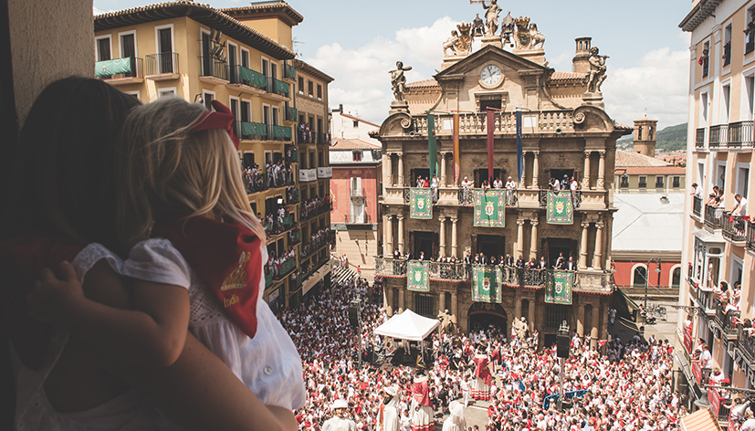

San Fermín desde dentro
Una mirada íntima y heredada a la fiesta: lo que ocurre antes, durante y después, y que no siempre se cuenta.

Hay formas de vivir San Fermín que no aparecen en los programas ni en las guías rápidas. Formas que se heredan, que se aprenden sin explicarse, que empiezan antes del 6 de julio y terminan mucho después del Pobre de Mí. Esta es una de ellas.
Amanecer en los corrales: donde empieza todo
Recuerdo la primera vez que entendí que San Fermín no era una fiesta. Era temprano. Demasiado temprano para una niña. El aire estaba frío y húmedo, y la ciudad parecía contener la respiración. Me levanté a escondidas y vi a mi abuelo atarse las alpargatas para tomar camino hacia los corrales.
Él no hablaba mucho, pero no hacía falta. Había algo en su forma de contarnos cómo vivía cada mañana que decía más que cualquier explicación. Allí, entre madera, tierra y silencio, revisaba que todas las ganaderías tuvieran las reses completas. Tranquilos, imponentes. Los observaba como quien saluda a un viejo conocido.
Tocaba la corneta cuando era la hora de sacarlos del corral. Formaba parte de ese mundo mucho antes de que yo supiera siquiera ponerle nombre. Años después comprendí que aquello también era San Fermín: lo que ocurre antes, lo que ocurre después, lo que no se ve.
Crecer en Pamplona: cuando lo extraordinario parece normal
Crecí pensando que lo que pasaba cada julio era lo normal. Que todas las ciudades se vestían de blanco y rojo, que todas sabían detenerse durante ocho días para recordar quiénes eran. Con el tiempo entendí que no. Que lo extraordinario no era la fiesta: era la forma en que la vivíamos.
En casa, el programa de fiestas nunca era un simple papel. Se abría con cuidado, casi con ceremonia. Se comentaban los actos, se recordaban años anteriores, se señalaban momentos que no podían perderse. No era planificación: era tradición. Y la tómbola tenía su propio ritual el día de ir a buscar el ansiado programa.
Mi abuelo hablaba de la llegada de los toros tras largos recorridos, de la trashumancia, del viaje pausado de los animales antes de entrar en la ciudad. Mi padre recordaba historias de una Plaza del Castillo que había sido escenario de espectáculos, de una Pamplona distinta pero conectada con la de ahora.
Gigantes, Cabezudos y Zaldikos: la herencia que se aprende jugando
De niña, lo que más me fascinaba eran los Gigantes y Cabezudos. No entendía del todo lo que representaban, pero no importaba. Los seguía por las calles con mis primos entre risas, música y carreras improvisadas, mientras mi tío tocaba la gaita para acompañarles.
Los zaldikos aparecían de repente, provocando sustos y carcajadas. Era un caos alegre, lleno de vida en cada rincón de la ciudad vieja. Ahora sé que aquello también era aprendizaje. Otra forma de heredar.
El Encierro: cuando la emoción se convierte en conciencia
Con los años, la fiesta cambió… o quizá cambié yo. Empecé a entender los silencios antes del Encierro. La tensión real. El respeto. La importancia de cada decisión, de cada paso. Ya no era solo emoción: era conciencia.
Años después, gracias a grandes amigos corredores, entendí cada ritual que se hace para preparar ese momento: desde el sanitario y el veterinario, hasta los pastores, los balcones y la plaza que se prepara para que la fiesta no pare después.
La ciudad que se sienta a la mesa
Después venían los almuerzos. Los aperitivos al sol que esperamos toda la semana de julio. Largos, sin prisa. Mesas compartidas con familia y amigos, donde la comida era casi una excusa. La gastronomía navarra, sincera y contundente, acompañaba conversaciones que saltaban del pasado al presente sin esfuerzo.
Y entre todo eso, las danzas, las dianas, la música de banda o la Pamplonesa, las peñas, los tambores y una Estafeta siempre a rebosar. Grupos que avanzaban como uno solo, unidos por algo difícil de explicar pero fácil de sentir.
Vivirlo desde dentro: el lenguaje que no se enseña
Hubo un momento, no sé exactamente cuándo, en el que entendí lo esencial: San Fermín no existe para ser visto desde fuera. Existe para ser vivido desde dentro.
Es un lenguaje que todos comprenden sin haberlo estudiado. Un ambiente que te envuelve hasta que dejas de observar y empiezas a formar parte. Un sentimiento que no distingue entre quien ha nacido aquí y quien llega por primera vez.
Cada día empieza igual: al amanecer, con el pulso del encierro marcando el ritmo. Y, sin embargo, ningún día es igual. Las horas se alargan. Los encuentros surgen sin planearlos. Las despedidas nunca son definitivas.
Lo que se hereda sin decirlo
Hoy, cuando miro atrás, entiendo que este proyecto nace de todo eso. De unos ojos que miraban toros al amanecer. De una ciudad que decide parar para seguir siendo ella misma. De una historia que no se cuenta: se transmite.
Y de una certeza sencilla: hay cosas que no deberían explicarse demasiado. San Fermín es una de ellas.